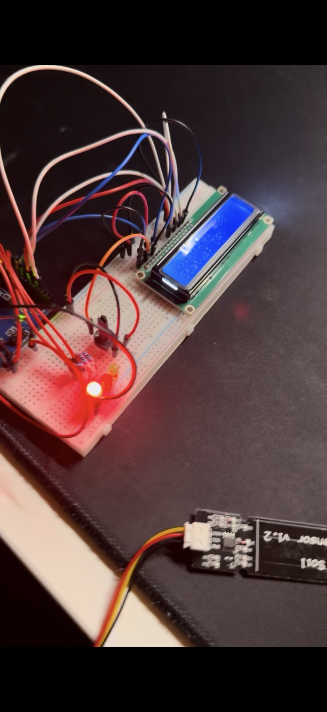
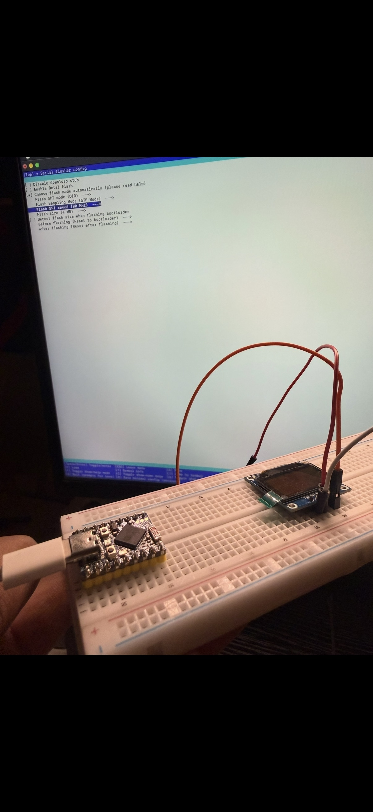
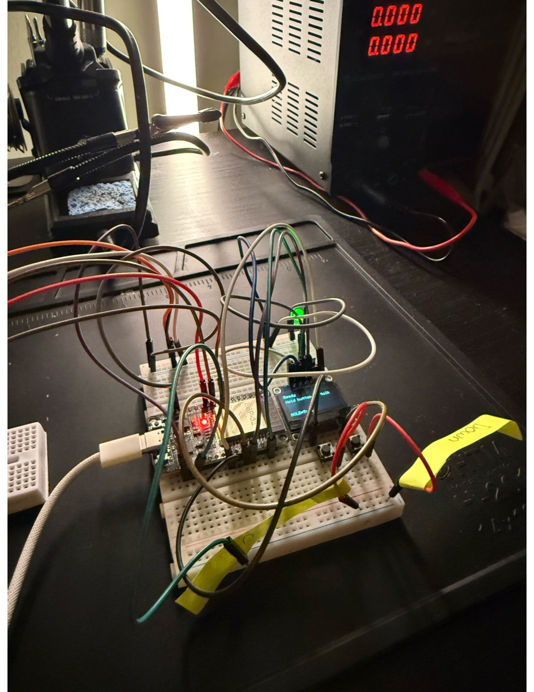

Hello, I'm
Electrical Engineering Student at Georgia Tech
I'm Mahi Rahman, a sophomore Electrical Engineering student at the Georgia Institute of Technology. Born and raised in Atlanta, Georgia, I grew up surrounded by one of the fastest-growing tech ecosystems in the Southeast. The city's vibrant innovation scene, from the startups along the Atlanta Tech Village corridor to the engineering powerhouses headquartered nearby, sparked my curiosity early and set me on the path toward engineering.
What drives me is a genuine passion for building things that work in the real world. Whether it's wiring up a microcontroller-based monitoring system, designing a 3D-printed enclosure for embedded electronics, or getting a large language model to run on a tiny ESP32, I'm happiest when I'm turning an idea into something tangible. I take deep interest in my work and I'm always looking for the next thing to learn. That mindset led me to present one of my projects to engineers at Google, an experience that reinforced my belief that the best way to grow is to put your work out there and invite feedback.
Outside the lab, you'll find me on a hiking trail exploring the North Georgia mountains or at the gym pushing through a new personal record. I believe that discipline in fitness translates directly into discipline in engineering. Both demand consistency, patience, and a willingness to fail forward. Atlanta's access to both world-class tech and incredible natural landscapes has shaped who I am: someone equally at home debugging firmware and summiting a ridge at sunrise.
I'm currently exploring the intersections of semiconductors, electric circuits, power systems, and robotics as I work to find where I can make the greatest impact. My goal is to become an industry engineer at the forefront of hardware innovation, designing the chips, circuits, and systems that power the next generation of technology.
Firmware development in C/C++ on microcontrollers including ESP32, Arduino, and STM32 platforms.
Analog and digital circuit design, prototyping, PCB layout, and hands-on soldering and testing.
Fundamentals of power electronics, energy conversion, and electrical power distribution systems.
Sensor integration, actuator control, and system-level design for autonomous and semi-autonomous robots.
Interest in VLSI design, semiconductor physics, and the fabrication processes that drive modern computing.
Working proficiency in C/C++, Python, JavaScript, and TypeScript with a focus on continuous improvement.
A selection of hands-on engineering projects I've built. This section will grow throughout my time at Georgia Tech.

Fall 2024 | Independent Project
Click to read more
Designed and built a microcontroller-based system for acquiring and processing soil moisture data in real time. The project combined embedded firmware, sensor calibration, and mechanical design into a complete, field-ready monitoring solution.
This project deepened my understanding of sensor interfacing, signal conditioning, and the full embedded development cycle, from breadboard prototype to a physically enclosed, deployable system. The skills I developed here directly apply to industrial IoT and precision agriculture, sectors where real-time environmental monitoring is increasingly critical.
Click to go back

Personal Project
Click to read more
Explored the frontier of edge AI by running a large language model on an ESP32 microcontroller, a device with just a few hundred kilobytes of RAM. This project pushed the boundaries of what's possible on resource-constrained hardware and required creative optimization at every level.
This project sits at the intersection of AI and embedded systems, two fields that are rapidly converging. Working within severe hardware limitations taught me more about efficient computing than any textbook could, and reinforced my belief that the future of AI isn't just in the cloud. It's on the chip.
Click to go back

Personal Project
Click to read more
Built a standalone, handheld AI terminal by connecting an ESP32 microcontroller with an integrated display to the ChatGPT API over Wi-Fi. The device accepts user input, sends queries to the API, and renders the response on-screen with physical button-based scrolling.
This project combined networking, UI design, and embedded programming into a single, cohesive device. It demonstrated that powerful cloud AI services can be made accessible through minimal, low-cost hardware, an approach with applications in education, accessibility, and rapid prototyping of AI-powered tools.
Click to go back
Presented one of my personal engineering projects to a group of Google engineers. The experience sharpened my ability to communicate complex technical work to a senior audience and gave me invaluable feedback that has shaped how I approach project design and documentation.
My long-term aspiration is to become an industry engineer at a leading technology or automotive company, organizations like NVIDIA, Tesla, Rivian, or Toyota, where I can design the hardware systems that push the boundaries of computing, electrification, and autonomy. I want to be at the table where the next generation of chips, power electronics, and robotic systems are conceived and built.
Getting there requires a deliberate, step-by-step approach. Below is my roadmap, a set of milestones I've mapped out using my ECE coursework, co-curricular opportunities at Georgia Tech, and industry insights gathered through networking and my internship experiences.
Complete core ECE coursework in circuit analysis, semiconductor devices, power electronics, and signals and systems. Pursue advanced electives in VLSI design and embedded systems to develop specialized depth in hardware engineering. Maintain strong academic performance while actively connecting theory to hands-on projects.
Secure internships or co-op positions at semiconductor, automotive, or robotics companies, targeting organizations like NVIDIA, Tesla, Rivian, or Toyota. Focus on roles involving hardware design, embedded systems, or power electronics to gain real-world engineering experience and build a professional network in the industry.
Join a research lab at Georgia Tech focused on power systems, robotics, or semiconductor devices. Contribute to publishable work and gain exposure to cutting-edge methods that go beyond the classroom. Research experience strengthens both technical depth and the ability to think critically about open-ended problems. These are skills that distinguish strong industry engineers.
Continue building this ePortfolio as a living record of my growth. Attend career fairs, IEEE events, and industry conferences. Leverage LinkedIn and GitHub to share projects and connect with professionals in target fields. The Google showcase taught me that visibility matters. Putting your work in front of the right people opens doors that applications alone cannot.
Secure a full-time hardware engineering role at a top-tier technology or automotive company. Contribute to the design and development of next-generation semiconductors, power systems, or robotic platforms. Long-term, I aim to grow into a senior technical role where I can lead projects, mentor junior engineers, and drive innovation at scale.